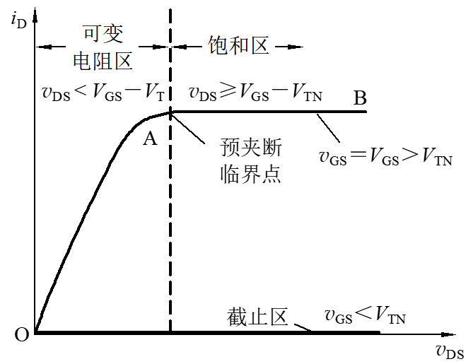

场效应管
场效应管的结构，基本的名词，三极管的区别，为什么能实现电压控制电流，特性曲线（输出与转移），曲线上的分区，不同类型的管子有什么区别，参数，包括符号有什么不一样（上面/下面，左边/右边），主要参数什么意思（交流参数不做要求） JFET的结构，工作原理，特性曲线 特别清晰：场效应管与三极管的同/异
场效应晶体管(FET)是一种电压控制的单极性半导体器件，利用电场效应改变内部导电沟道，实现控制输出电流的目的
场效应管的分类：
- MOSFET绝缘栅型
- 增强型
- N沟道
- P沟道
- 耗尽型
- N沟道
- P沟道
- 增强型
- JEFT结型
- N沟道（耗尽型）
- P沟道（耗尽型）
耗尽型：场效应管没有加偏置电压时，就有导电沟道存在 增强型：场效应管没有加偏置电压时，没有导电沟道

MOSFET: 金属-氧化物-半导体场效应管
是利用半导体表面电场效应进行工作，故而又称为表面场效应器件
N沟道增强型MOSFET
结构

工作原理
$V_{GS}$对沟道的控制作用
- $V_{GS}\leq 0$时，没有导电沟道的产生，d、s间加电压也无电流产生
- $0<V_{GS}<V_{TN}$时，产生了电场但是未形成导电沟道(反型层)，此时ds间仍无电流
- $V_{GS}>V_{TN}$时，电场作用下产生了导电沟道，ds间加电压后有电流的产生。($V_{GS}$越大，那么导电沟道就越厚)
- 其中$V_{TN}$代表的是N沟道增强型MOSFET的开启电压
- 产生沟道过程：使栅极接正，源极接负，形成了从栅极到P型硅片的以二氧化硅为截止的平板电容器，产生了一个垂直于半导体表面的电场，使得P极衬底中的空穴被排斥留下不能移动的受主离子(负离子)，形成耗尽层，同时P型衬底中的少子(电子)被吸引到栅极下的衬底表面，栅源电压达到一定值后，在栅极附近的P型硅表面形成了一个N形薄层,称为反型层，实际上也就形成了感生沟道
$V_{DS}$对沟道的控制作用
当$V_{GS}$一定时(即大于开启电压)，$V_{DS}$电压上升将会导致$I_{D}$增大，从而使得沟道电位梯度上升，靠近漏极d处的电位升高，使电场强度减小，从而使沟道变薄。
当$V_{DS}$增长到使得$V_{GD}=V_{TN}$的时候，在紧靠漏极处会出现预夹断。
预夹断之后，若$V_{DS}$继续上升，那么夹断区延长，导致沟道电阻上升，使得$I_D$基本不变
同时作用
给定一个$V_{GS}$,就有一个不同的$i_D-V_{DS}$曲线
- 沟道中只有一种类型的载流子参与导电，所以场效应管也被称为单极型三极管
- MOSFET的栅极绝缘，故而$i_G\approx 0$,输入电阻很高
- MOSFET是电压控制器件，$i_D$受$v_{GS}$控制
- 只有当$v_{GS}>V_{TN}$时，增强型MOSFET的ds端才能导通
- 预夹断前$i_D$和$V_{DS}$接近线性关系，预夹断后，趋近饱和
I-V特性曲线
- 输出特性曲线 $i_D=f(v_{DS})|_{v_{GS}=const}$
- 截止区 $v_{GS}<V_{T}$
- 导电沟道未形成,$i_D=0$，为截止工作状态
- 可变电阻区 $v_{DS}<(v_{GS}-V_{TN})$
- $i_D=K_n[2(v_{GS}-V_{TN})v_{DS}-v_{DS}^2]\approx 2K_n(v_{GS}-V_{TN})v_{DS}$
- 饱和区(也称放大区) $V_{GS}>V_{TN}$且$v_{DS}\geq (v_{GS}-V_{TN})$
- $i_{D}=K_n(v_{GS}-V_{TN})^2$
- 必须要让FET工作在饱和区才有放大作用
- 截止区 $v_{GS}<V_{T}$
转移特性 $i_D=f(v_{GS})|_{v_{DS}=const}$
N沟道耗尽型MOSFET
结构与工作原理
在二氧化硅绝缘层中掺有大量的正离子，已存在导电沟道可以在正或负的栅极电压下工作，而且基本无栅流
- 当$V_{GS}>0$时，沟道中感生出更多的负电荷，使得沟道变宽，在$v_{DS}$作用下，$i_D$有着更大的数值
- 当其小于0时，沟道中负电荷减少，沟道变窄，从而使得漏极电流减小。当负电压到达某值时，耗尽区扩展到这个沟道，沟道被完全夹断，此时$i_D$不存在，这是的栅源电压称为夹断电压(截止电压)$V_P$
I-V特性曲线
P沟道MOSFET
电路符号和N型的区别在于代表衬底的B的箭头方向
为能正常工作，PMOS管的$v_{DS}$必须为负值，开启电压$V_T$也是负值，**实际电流方向为流出漏极，但是我们假定流入漏极的电流方向为正**
沟道调制效应等几种效应
- 沟道长度调制效应
- 考虑到$V_{DS}$对于沟道长度L的调制效应，实际上饱和区的曲线并不是平坦的
- 衬底调制效应(体效应)
- 衬底没有和源极并联时，衬底与源极之间的偏压$v_{BS}$会影响实际的开启(夹断)电压和转移特性(如对于N沟道增强型而言，$V_{BS}$负的越多，转移曲线右移)
- 为保证导电沟道和衬底之间的PN结反偏，通常会要求N沟道$V_{BS}\leq 0$,P沟道$v_{BS}\geq 0$.通常会让N沟道器件衬底接电路最低电位，P沟道器件衬底接电路最高电位
- 击穿效应
- 漏衬击穿
- 外加的漏源电压过高，将漏极到衬底的PN结击穿
- 栅极击穿
- 栅极电压过大
- 通常在栅源间加入双向稳压管，限制栅极电压保护器件
- 漏衬击穿
主要参数
- 直流参数
- 增强型参数：开启电压$V_T$
- 耗尽型参数：夹断电压$V_p$
- 耗尽型参数：饱和漏电流$I_{DSS}$
- 直流输入电阻$R_{GS}$
- 交流参数
- 输出电压$r_{ds}$,不考虑沟道调制效应时为无限大，实际中一般为几十千欧到几百千欧
- 低频互导$g_m$
- 极限参数
- 最大漏极电流$I_{DM}$
- 最大耗散功率$P_{DM}$
- 最大漏源电压$V_{(BR)DS}$
- 最大栅源电压$V_{(BR)GS}$
JEFT
结构
箭头的方向表示栅极正向偏置时，栅极电流方向从P到N，由此可以区分N沟道和P沟道
工作原理分析-以N沟道为例
$v_{GS}$对沟道的控制作用
其小于0时，PN结反偏，耗尽层加厚，使得沟道变窄
但他减小到一定值时，沟道夹断，对应的栅源电压$v_{GS}$称为夹断电压$V_{P}$
N沟道的JEFT夹断电压小于0
上述分析表明，改变$v_{GS}$大小，可以有效控制沟道电阻的大小。$|v_{GS}|$增大，沟道电阻增大，$i_D$减小
$v_{DS}$对沟道的控制作用
考虑$v_{GS}$为0的情况，随着$v_{DS}$的增加，一方面沟道电场强度增加，漏极电流增加，另一方面gd间的PN结方向电压增加，在经过源极到沟道的N型半导体区域中形成了沿沟道的电位梯度，靠近漏层的耗尽层加宽，沟道变窄，从上到下呈楔形分布
$v_{GD}=V_p$时出现预夹断，此时虽然$v_{GD}$上升，但是夹断区延长导致电阻上升，使得$i_D$基本不变
共同作用
当$V_p<V_{GS}<0$，导电沟道更容易被夹断，对于同样的$v_{DS}$，$i_D$更小
预夹断处$v_{GD}=v_{GS}-v_{DS}=V_P$
综上可知
- JFET栅极与沟道间的PN结是反向偏置的，因此$i_G\approx 0$，输入电阻很高。
- JFET是电压控制电流器件，$i_D$受$v_{GS}$控制。
- 预夹断前$i_D$与$v_{DS}$呈近似线性关系；预夹断后，$i_D$趋于饱和
为什么JFET的输入电阻比BJT高得多？
特性曲线与参数
FET和BJT的比较
- FET和BJT内部都含有两个PN结，外部都有3个电极。它们有如下的对应关系：
FET BJT
栅极g -- 基极b
源极s -- 发射极e
漏极d -- 集电极c
- 虽然这两类器件的工作原理不相同，但它们都可以利用两个电极之间的电压控制流过第三个电极的电流来实现输入对输出的控制。
- MOS管：栅-源电压$v_{GS}$控制漏极$i_D$
- BJT：基-射极间电压$v_{BE}$控制集电极电流$i_C$
- 在放大区域内，MOS管的$i_D$与$v_{GS}$之间是平方律关系，而BJT的$i_C$与$v_{BE}$之间是指数关系。显然，指数关系更加敏感，所以通常BJT管的跨导要大于MOS管的跨导。
- 因MOS管的栅极电流$i_G=0$，而BJT管的基极电流$i_B\neq 0$，且电压$v_{BE}$首先影响$i_B$（或$i_E$），然后通过$i_B$（或$i_E$）实现对$i_E$的控制，故常将BJT称为电流控制器件，MOS管称为电压控制器件， 以示两者之差别。
- MOS管的跨导$g_m$不仅与$V_{GSQ}$和开启（夹断）电压的差值（或$I_{DQ}$）有关，而且还与其沟道的宽长比W/L 有关。而BJT的$g_m$ 仅与$I_{CQ}$有关。
- 这两类器件的输出电阻$r_o$都等于Early电压$V_A$与静态电流（$I_{DQ}$或$I_{CQ}$）的比值。通常BJT的$V_A$比MOS管的$V_A$大。意味着 BJT的输出电阻$r_o$ 比MOS管的大。
- MOS管的$K_n$与BJT的$\beta$ 或$\alpha$具有类似的性质，即它们主要取决于管子的固有参数（如，尺寸、参杂浓度、载流子迁移率等），而与它们所在的电路无关。